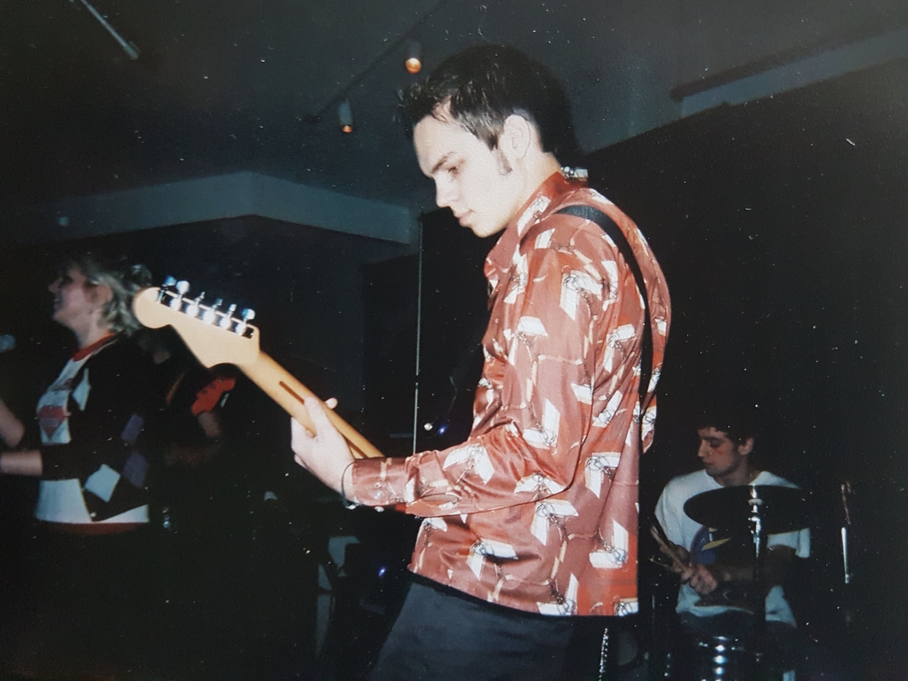

I never had an issue with the rain or the flooding that melting ice and snow leave until I got a fluffy dog…
Blue Blue Youth - We Are Wood And Likely To Burn (originally released October 20, 2016 via Velvet Blue Music) is now available for purchase via Bandcamp!
Drew Diver (Soda Shop) and Julian Brau (Isla invisible) take on this project of dark drones and soundscapes. Ambient, yet still moving pieces of work.
The new Photos recommendation widget on iOS 14 is great… here’s a throwback from probably 2003 or 2004 playing in my old punk band The Punchbowl Spikers.

I can’t help but share a paragraph I just came across while reading The God Delusion this evening:
“Lying, as rule for life, is inherently unstable. More generally, selfishness, or free-riding parasitism on the goodwill of others, may work for me as a lone selfish individual and give me personal satisfaction. But I cannot wish that everybody would adopt selfish parasitism as a moral principle, if only because then I would have nobody to parasitize.”
Here’s hoping for a better four years…
A friend and former bandmate (who often mixes/masters my stuff) released their new Isla Invisible EP2 this past Friday via Velvet Blue Music, check out the track “Estranged” below via Apple Music or via Bandcamp or via YouTube… on and on…
Better late than never! I’ve been in the habit of keeping a smart playlist for each year that contains all the tracks I “loved” in Apple Music. Here are my 20 for 2020. Enjoy!
A relevent quip from a conversation in the novel The Broom of the System by David Foster Wallace:
RICK: You’re being cruel, Jay. Go back to blatant bullshit. I vastly prefer blatent bullshit to overt cruelty.
JAY: You know, Olaf Blentner once said to me, over tea, that when reailty is unpleasant, realists tend to be unpopular.